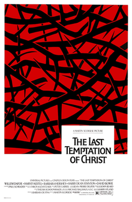

Course: Jesus in the Movies
Lecture #8: The Last Temptation of Christ (1988)
LAST TEMPTATION OF CHRIST (1988) Martin Scorsese

In the early 1970's the actress Barbara Hershey gave Martin Scorsese a copy of Nikos Kazantzakis novel The Last Temptation of Christ first published in Greek in 1955, and in English translation in 1960. Kazantzakis was best known to the American public thru the 1964 Hollywood adaptation of his 1946 novel Zorba the Greek with Anthony Quinn.
This novel, written toward the end of his life, was an admittedly fictional account of the life of Christ but also an autobiographical statement. He was using the writing of this novel to work thru his own lifelong struggle between the flesh and the spirit--a struggle he considered to be a universal struggle.
Jesus had been tempted to embrace the domestic pleasures of wife and home, of sex and children, and thereby abandon his spiritual call to sacrifice himself on the cross. Tho Jesus has an extended vision of the good life while hanging on the cross, he dies with the glorious knowledge that he had been faithful to death--flesh had been transcended by spirit.
Eighteen years passed between the time Scorsese received the book and got the movie made. During that time, he made several hit movies. Paramount pictures agreed to provide backing for “Last Temptation" and was budgeted for some 12 million dollars. Israel itself was chosen for the location, and Aidan Quinn received the title role.
Just as had occurred a decade before with Zeffirelli's film, protest began in the form of a letter-writing campaign led by the National federation for Decency under Rev. Donald Wildmon of Tupelo, Miss. And, just as GM had given in dropping its sponsorship of Zeffirelli's film, Paramount gave in to pressure and withdrew its support. In 1987, Universal pictures agreed to provide support with half the budget and shooting in Morocco instead of Israel.
A general release date for the film was set for Sept 1988. As the date neared, public pressure against the film began to build anew. In an age of cable TV and televangelism, the film became the object of scorn and the basis of threats in many fundamentalist circles. Central to the charge of blasphemy against the film was its expected portrayal of Jesus as one who resisted messiahship and engaged in various sex acts.
Universal Pictures took measures to anticipate and counter negative publicity by hiring a consultant who had experience in promoting films to the evangelical Christian market. However, he resigned for several reasons, most over misunderstandings.
The film opened in select cities in August 1988 so the public could judge for itself. However, a furor resulted, as reported in both Time and Newsweek. Jerry Falwell called for boycotts of all theatres showing the film and all products of MCA, Universal's parent company.
Bill Bright of Campus Crusade reportedly offered to raise ten million dollars to reimburse Universal if the studio would render unto him for destruction of all copies of the film.
To top it off, Lew Wasserman the chairman of MCA, himself a Jew, was accused by Christians of fomenting anti-Jewish hatred by allowing the distribution of the film. Demonstrators appeared near his home and an airplane flew over his home with a banner saying: "Wasserman fans Jew hatred w/ temptation.”
When released it starred Willem Dafoe as Jesus, music by Peter Gabriel and Barbara Hershey (who had started the whole thing by giving Scorsese the book) as Mary Magdalene.
THE FILM: AN ACKNOWLEDGED WORK OF FICTION
Like "Ben Hur" and others of the 50's, "Last Temptation", with a screening time of nearly 3 hours, also projects the grandeur and sweep characteristic of a cinematic epic.
The Scorsese film takes its place in the alternative trajectory of Jesus films because it too is mediated by a novel. Only now the Jesus story is not subordinated to another story as it had been in "Ben Hur." As in the Kazantzakis novel, so in the film, the Jesus story stands front and center and its characterization of Jesus at many points challenges traditional ecclesiastical understandings of what he was all about.
The film immediately establishes its relationship to the novel before the title frame these words from the novel scroll upward on the screen:
"The duel substance of Christ--/ the yearning so human / so superhuman / of man to attain God. . ./ has always been a deep/inscrutable mystery to me./ My principle anguish and source/of all my joys and sorrows/from my youth onward has been the incessant,/merciless battle/ between the spirit and the flesh. . ./ and my soul is the arena where these two armies/ have clashed and met.”
This is followed by a disclaimer added by Scorsese in response to the charges that the movie was a blasphemous distortion of the biblical story.
"This film is not based on the gospels but upon the fictional exploration of the eternal spiritual conflict."
These words disclaim too much for as with the novel, the film is based on the story of Jesus as narrated in the four gospels.
PART ONE of the film shows Jesus’ laboring in his carpentry shop making crosses for the Romans. Judas, a friend of his, accuses him of collaboration. He visits his childhood friend Mary Magdalene at her place of prostitution, where he waits his turn for conversation, not for sex. Goes to a desert monastery seeking spiritual guidance and has a reconciliation with Judas.
PART TWO includes stories drawn from the gospels but with a dramatic rearrangement of sequence and sometimes surrealistic staging. He rescues the woman taken in adultery (Mary Magdalene), preaches a modest sermon on the mount and calls disciples all before he is baptized by John which is followed by the temptations in the wilderness.
Shows Scene 8-11 -- his unsureness beginning his ministry, calls disciples, note female voice of Satan - uses BAR @ Sodom & Gomorrah
From there on there are more gospel incidents: exorcisms, healings, etc. entrance into Jerusalem, cleansing the temple (twice), last supper including the women. Having cajoled Judas into betraying him, he is arrested in Gethsemane and denied by Peter. He is tried, makes his way to Golgotha, is crucified and utters three of the seven words.
PART THREE of the film, the controversial vision sequence, takes place between the 2nd and 3rd of Jesus' last words from the cross. Here Jesus experiences his "Last temptation" to forsake his call to death for a domestic life with wife and child.
Jesus imagines that he has been rescued from the cross by the intervention of God thru his guardian angel; and he considers what his life could have been like. In his mind he marries Mary Magdalene. She dies. Then he marries Mary the sister of Lazarus, and enjoys life with Mary, her sister Martha, and their children.
Along the way, Jesus confronts Saul--now Paul--who proclaims Jesus to be the resurrected messiah; and, as Jerusalem burns, (in 70 CE), Jesus has deathbed conversations with his surviving disciples including Peter and Judas, John & Nathaniel.
But at the end, Jesus' guardian angel is disclosed to have been Satan, and his imagining to have been just imagining. He awakens to the harsh reality of the cross and dies--faithful to the end, with a smile on his lips and a crown of thorns on his head.
The film ends with the death of Jesus on the cross, so it takes its place alongside those Jesus films that conclude with his crucifixion and death, not his resurrection--at least not resurrection in the sense of the dead Jesus' having been resurrected to new life by God.
However, “The Last Temptation" goes beyond these earlier films by explicitly raising for the viewer the possibility that belief in the resurrection of Jesus had been fabricated. This idea is as old as the original quest for the historical Jesus, as we discussed, with H. S. Reimarus in the 18th century claiming that the disciples stole Jesus body. In this film, the hint of fraud arises thru the surprising and provocative role in this Jesus story of Saul, or Paul.
Even though the exchange between Jesus and Paul takes place in Jesus' imagination on the cross, the question of the relationship between the Christ of faith as preached by Paul and by the church and the Jesus of history has been raised more explicitly here than in any other Jesus story film to this time.
Show 24-end -- 34 min
THE PORTRAYAL: JESUS AS RELUCTANT MESSIAH
Jesus knows the Messiah will not come thru force and Judas has been ordered to assassinate him for collaboration with the Romans. However, after Jesus returns from seeing the monks in the desert, Judas joins with Jesus, but with a vow to kill Jesus if he deviates from the path of revolution.
Judas is called by Jesus his "strongest friend" and he confides that he has come to die as a sacrificial lamb in fulfillment of scripture and he must do so willingly.
Throughout the ministry of Jesus in this film, his message shuttles back and forth somewhat confusedly on at least three levels of discourse and meaning.
ON ONE LEVEL, Jesus’ speech resembles the synoptic gospels using the "world of God" rather than 'kingdom of God". His ministry opens with the sermon on the Mount, modified, in which Jesus proclaims blessings, woes and the only parable used, that of the Sower, which he interprets as himself with the seed representing love.
ON THE SECOND LEVEL, Jesus' speech recalls the theological categories of the later church. Obviously coming from both Kazantzakis and Scorsese’s Greek and Roman backgrounds. Conversations between Jesus and others often revolve around the ideas of body and soul, heaven and hell.
The dualism between flesh and spirit obviously finds its way into the fabric of the film itself. It is also this traditional dualism that probably accounts for the blatant sexism that jars the viewer of a film made in the late 80's. The temptation of the domestic life with a woman represents Satan's way. The rejection of such temptation becomes God's way.
Satan as serpent speaks with a throaty woman's voice; and Satan is deceptively in the form of a young girl as guardian angel consoling Jesus on Mary Magdalene death in the fantasy sequence. She says:
"there's only one woman in the world; one woman, with many faces. This one falls; the next one rises."
ON A THIRD LEVEL Jesus words reflect the philosophical perspective adopted by Kazantzakis, under the influence of Henri Bergson. Jesus' comments are sometimes avowedly pantheistic. For example, he can tell Judas that when he gazes into the eye of an ant, he sees the face of God.
Scorsese does what no other filmmaker has ever dared to do in his portrayal of Jesus--at least not with such sustained intensity. He dares to get into the mind of Jesus so that the viewer not only hears Jesus speak, not only hears Jesus speak about what he has been thinking, but actually hears Jesus think!
Scorsese uses the cinematic technique of voice-over to open up the interior life of Jesus. Therefore, thru its exploration of Jesus' inner self, this film portrays Jesus as a reluctant messiah--ultimately, a reluctant suffering-servant messiah.
Throughout the film Jesus inner struggle becomes known to the viewer, the questioning, the equivocation. the anxiety. the fear. But also, finally, understanding and conviction! At first uncertain whether Satan or God was speaking to him, Jesus finally comes to the realization it is God and that god requires him to die. Unlike "Superstar" however, this Jesus eventually understands why he must die. In spite of their differences, both Zeffirelli's film and this one see Jesus’ role in terms of the suffering servant of Isaiah 53.
This film moves directly, and swiftly, from Jesus' arrest to his trial before Pilate, missing entirely any appearance before the Jewish authorities. It is assumed the charges are political. Barabbas has no part in this either.
Like most Jesus films, Jesus tells Pilate his Kingdom is not of this world. The film appears to avoid some of the gospel-based antisemitic tendencies in other Jesus films. However, some of Jesus declarations in the temple to the Jewish leaders are rather astounding: "I'm throwing away the law. I have a new law and a new hope." "I'm the end of the old law and the beginning of the new one... I'm the saint of blasphemy... God is not an Israelite.”
THE RESPONSE: Protest born again
When the film opened in Aug 1988 with an R rating, a pattern appeared that would repeat itself in other towns with theatre operators willing to show the film.
Local police often separated those attending from resident protestors who waved bibles and placards, and who prayed and sang. The protests had an impact as the protests and the calls for boycott reduced the number of theatres in which the film was screened nationwide and possibly made the film into a box office loser, at least according to the leaders of the boycott.
Even when the film was released in video the following summer, there were video chains and local stores that refused to stock it.
During this time of controversy, Scorsese submitted himself to a number of self-explanatory and promotional interviews. In one interview with Richard Corliss for a magazine right after the film's release
Corless asked: "Is this Jesus God, or a man who thinks he's God?"
Scorsese: "He's God. He's not deluded. I think Kazantzakis thought that, I think the movie says that, and I know that I believe that..."
Here and elsewhere, Scorsese identified himself as a believer and defended the film as an expression of faith, however unconventional its portrayal of Jesus.
Corliss in a brief review in Time concluded that "those willing to accompany Scorsese on his dangerous ride through the gospels may believe that he has created his masterpiece."
Apart from Corliss, few in the secular press agreed that it was his masterpiece though the "New York Times" review spoke of "this handsome film" and described Scorsese as "perhaps the most innately religious of major American filmmakers."
Those who did not like the film (like the New Yorker and National review) said it was because of criteria based on cinematic not religious reasons. Dialogue was one of the weaknesses. Jesus and his followers sounded like the streets of NYC while the Romans and Satan spoke with British accents.
Willem Dafoe's performance as Jesus generally received commendation but often with cutsy expressions. In one case it was said "Willem Dafoe, working hard, plays Jesus about as well as any non-lunatic could." Another critic said “if you like you Jesus as a Zen Hippie he was good."
RELIGIOUS PRESS, as one would expect, was more negative than the secular. This was true in both the conservative and liberal periodicals. These differed on how the film failed.
The conservative Christianity Today criticized the obvious level of deviation from and distortion of the New Testament portrayal of Jesus. He calls the Jesus created by Kazantzakis and Scorsese as the "symbolic Jesus" created in their own images.
He also identifies the sharp dualism between the flesh and the spirit, which condemns the flesh and exalts the spirit, as "the most dangerous and most deeply misleading thing about this film." Thus felt that "Last Temptation” failed in its central purpose--to affirm the humanity of Jesus.
The traditionally liberal Christian Century considered the film a failure not because of its obvious deviation from the gospels but because it follows the gospels too closely--particularly in its presentation of familiar events in the middle section. It says that the film "presents biblical material with the literal mindedness of a fundamentalist preacher from Oklahoma.”
This film is condemned not because it has a dangerous or misleading theological viewpoint, but because it has none. to quote:
"The picture is so utterly lacking any serious theological vison that all the audience hears is a mishmash of words gleaned from popular cultures assumptions about the man called Jesus--references to love, kingdom, power, sin, guilt, anger, forgiveness, not to mention that constant, most oppressive of all forces, the one who makes ultimate demands, God Himself."
Since there was no resurrection, at the end this also caused consternation.
Roman Catholic reviewers also recognized its theological as well as artistic weaknesses. Nonetheless, they were often quick to deny that the film by their fellow Catholic was in any way blasphemous.
AMERICA in August 1988 spoke of the production as "this dull, low-budget, pretentious little film" and explored two problematic areas of Christology as presented in the film: the depiction of Jesus as a sexual being, and the presentation of Jesus with a developing awareness of himself and his mission.
The reviewer, R. A. Blake, SJ, suggest that anyone taking offense at the notion of Jesus' experiencing sexual temptation often stems as much from that person's own attitude about sex as a reverence for Jesus.
He expressed greater reservations about the way the film dealt with the emerging self-consciousness of Jesus since "the Scorsese Christ is not a man heroically searching for His destiny but a tormented, neurotic blunderer who lets circumstances dictate his next step."
Blake also observes, what "Christian Century" also did, that "the film suffers cinematically by its own fundamentalistic presentation of the gospel.”
Another reviewer, a Dominican, identified several moments that were "theologically wacko". But within the overall tradition of Jesus films, he concluded:
"more than any other film of its type, Scorsese's 'Last Temptation' measures the magnanimity of Christ's sacrifice in terms of moral choices. This above all is the value of the film, and for that one can tolerate its theological deficiencies."
In the more popular vein, in U.S. Catholic, the writer said a loud "Thank you, Martin Scorsese." for daring to portray Jesus as one who was tempted and for reintroducing the notions of temptation and sin for discussion in the church.
Father Fehren, the writer, responded to a full-page newspaper ad headlined "public blasphemy!" taken out by those protesting the film. He responded with a question and an answer: "Who protests money-grabbing, Bible-thumping TV evangelists whose vocal volume increases as their theology decreases, whose sweating, prancing, whooping and hollering help to cover up their biblical ignorance? They are the blasphemers.”
The image conveyed is appropriate to the description of Saul/Paul as portrayed in the Scorsese film, a huckster on the make.
Even though the "Last Temptation" was defended by Catholic commentators, the film itself did not receive an approval rating from the Catholic church agency entrusted with evaluating and classifying movies. It was given a “O”, meaning that the film was judged to be morally offensive.
Whatever the classification of The Last Temptation by the United States Catholic conference (USCC), Martin Scorsese joined other makers of Jesus films at the end of the 20th century whose own cultural or confessional background was Catholic.
The Italian Pier Paolo Pasolini, although ideologically Marxist, had reinvigorated the alternative trajectory of Jesus films with his Gospel according to Matthew. Franco Zeffirelli, also Italian, brought the harmonizing approach to its finest expression with his film/ mini-series in 1977.